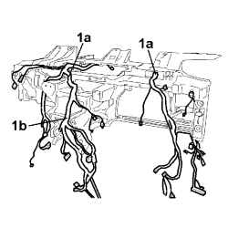
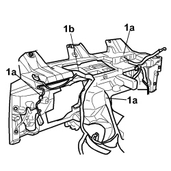

5505C30 BUILT-IN WIRING UNDER DASHBOARD - R.R. WITH DASHBOARD TRIM REMOVED
- Path
- Procedures > 55 ELECTRICAL EQUIPMENT > 5505 INSTRUMENT/GAUGE ELECTRICAL CIRCUITS > 5505C VEHICLE COMPARTMENT WIRING > 5505C30 BUILT-IN WIRING UNDER DASHBOARD - R.R. WITH DASHBOARD TRIM REMOVED
- Kind
- repair procedure (removal / refitting; the operation number is the code)
- Applies to
- all engines; all production periods
- Interactive page
- https://sloeber94.github.io/elrnDB-fCrm/en/#/194000687
Applies to: all engines; all production periods
 Removing
Removing
 Refitting
RefittingOp. 7040A98 INSTRUMENT PANEL TRIM SUPPORTING CROSSMEMBER - R.R. WITH DASHBOARD REMOVED
1. Release from retaining clips (1a) and detatch the integrated wiring (1b) from the rear of the instrument panel.

Applies to: all engines; all production periods
1. Release from retaining clips (1a) and detatch the integrated wiring (1b) from the front of the instrument panel.
Remove the integrated wiring from the dashboard.

Applies to: all engines; all production periods
Refitting
Removing- Check that the integrated wiring is not damaged and that the individual conducts are correctly fastened to the connections.
- If necessary, carry out continuity tests.
- Position the electrical wiring in the housing on the beam.
- Secure the wiring to the rear of the crossmember using the retaining clips.
- Secure the wiring to the front of the crossmember using the retaining clips.
Op. 7040A98 INSTRUMENT PANEL TRIM SUPPORTING CROSSMEMBER - R.R. WITH DASHBOARD REMOVED
Topics linked from this page (2)
- 7040A90 REINFORCEMENT BRACKET ONE LEFT OR RIGHT BETWEEN FACIA SUPPORT BEAM AND BODY R R WITH FACIA REMOVED
- 7040A98 INSTRUMENT PANEL TRIM SUPPORTING CROSSMEMBER - R.R. WITH DASHBOARD REMOVED